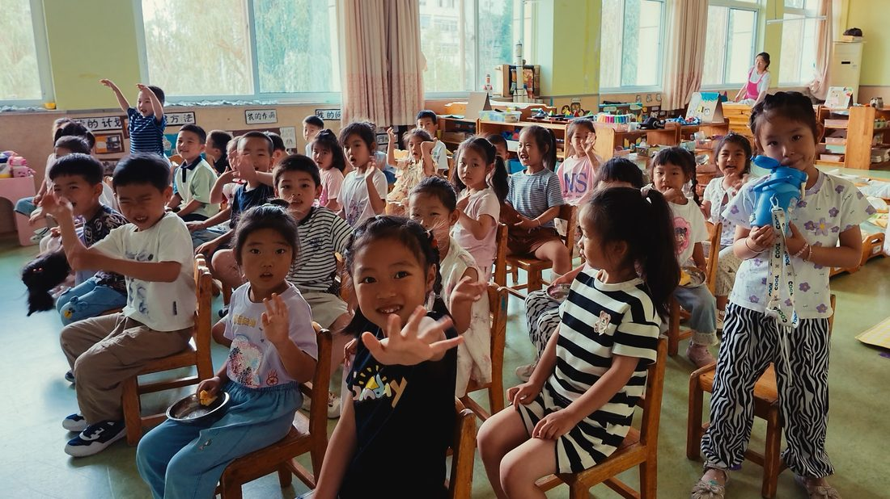
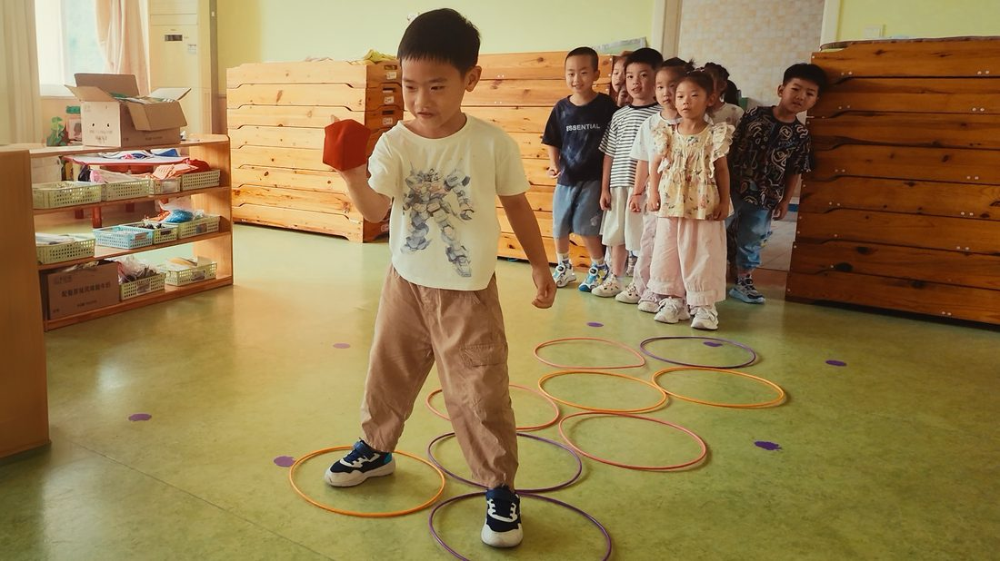
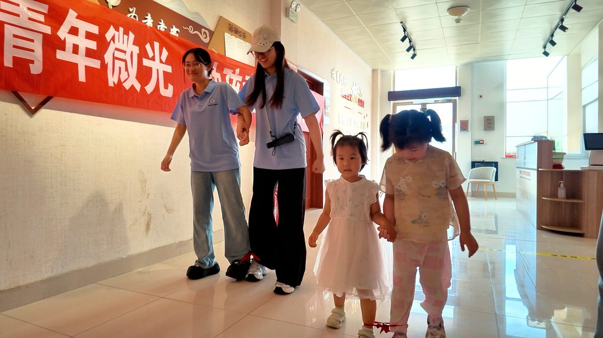
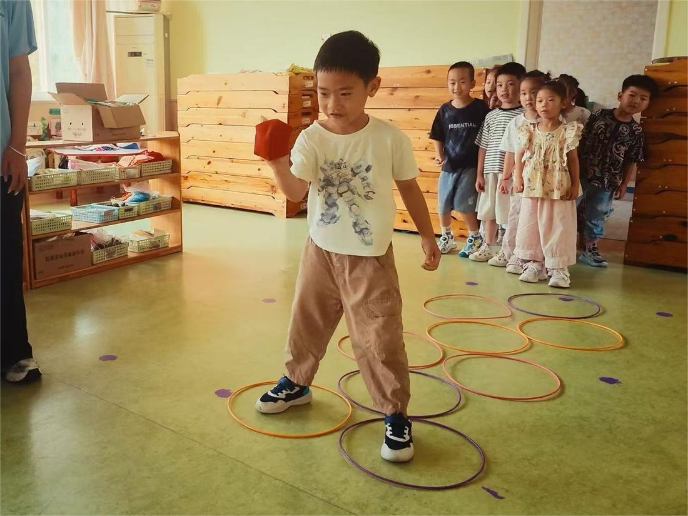
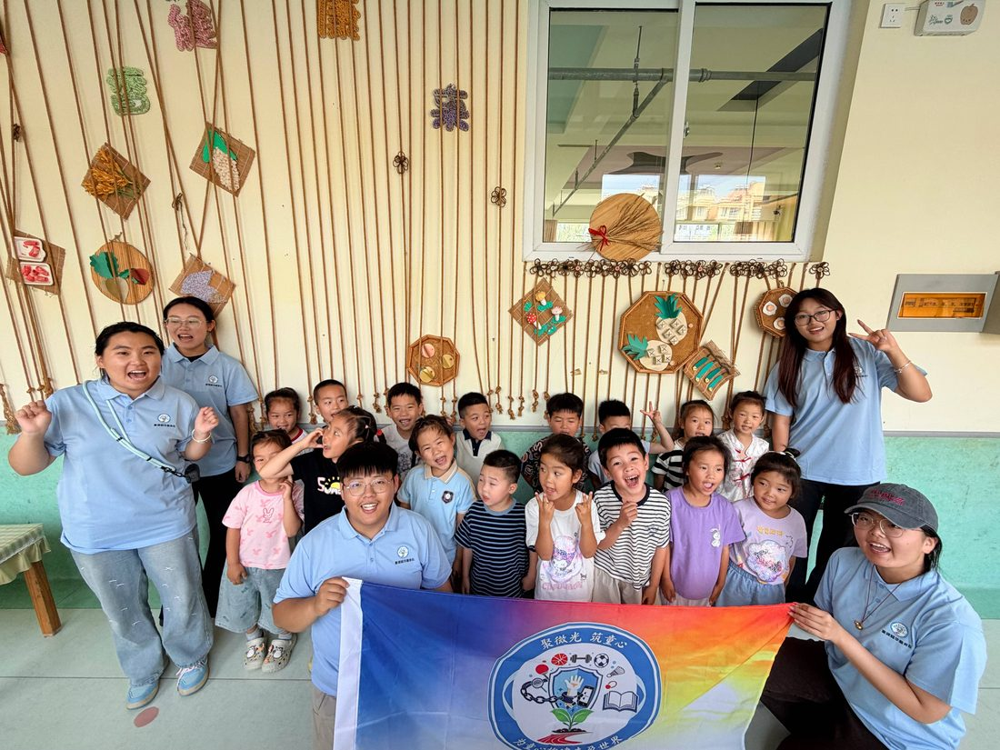
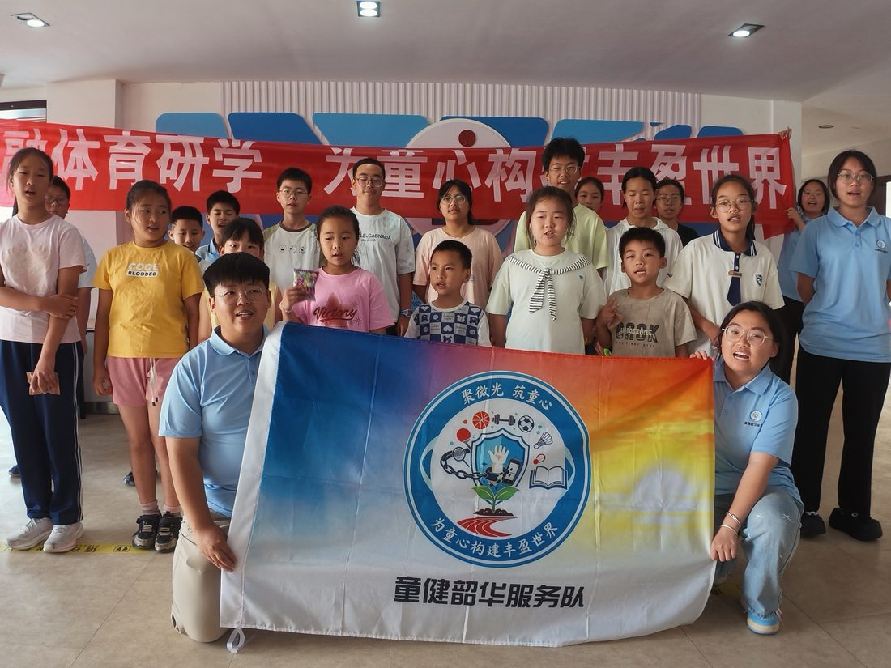

AI 体质评估与运动指导
填写身体基础数据，AI 生成专属健康评估、常量参考、运动禁忌与 11 天启动计划。
屏幕时间 · 以动代屏
评估每日屏幕使用情况，获取替代运动建议，并生成一份可执行的「健康用网契约」。
不含线上学习，仅指刷视频、游戏、聊天等娱乐使用。
📝 健康用网契约
🏃 趣味替代运动菜单
取自「以动代屏」社区趣味运动会项目，按阶段推荐：
理念与政策依据
🌱 什么是「以动代屏」
山东药品食品职业学院质量管理系「童健韶华」志愿服务队，面向城郊儿童开展「以动代屏」儿童健康守护行动：针对乡村儿童屏幕依赖突出问题，确立「疏堵结合」理念——用契约规则「堵」住过度用网，用趣味运动「疏」导户外兴趣，构建「网络素养启蒙 + 体质提升运动会」双模块服务体系。
🤖 与 AI 结合：人工智能赋能全民健身
依据《全民健身计划（2026—2030年）》提出的「运用人工智能赋能全民健身发展」，本助手把 AI 用于：
- 智能体质评估：输入基础数据，AI 生成个性化健康报告与运动计划；
- 精准健康干预：围绕儿童青少年体重、视力、心理、骨骼健康促进行动，给出针对性建议；
- 运动促健康志愿服务：呼应「实施运动促健康体育志愿服务工程」，让高校健康资源下沉基层。
📜 政策要点（摘要）
- 《全民健身计划（2026—2030年）》：到 2030 年经常参加体育锻炼人数比例达 40% 左右，人均体育场地面积 4㎡ 左右；
- 实施儿童青少年体重、视力、心理、骨骼、口腔健康促进行动计划；
- 学生体质强健计划：中小学生每天综合体育活动时间不低于 2 小时；
- 《体育强国建设「十五五」规划》：加强青少年体育工作，提升青少年身心健康水平，体育支教志愿服务扩面提质。
📂 点击下列文件名，可查看完整政策文件（图片版，支持离线浏览）：
👥 关于我们
山东药品食品职业学院 · 质量管理系
「童健韶华」志愿服务队由山东药品食品职业学院质量管理系学子组成，是一支以"青春奉献、专业赋能"为宗旨的志愿服务团队。2026 年暑期，团队赴威海开展"三下乡"社会实践，围绕"以动代屏"主线展开行动：
- 以动代屏：面向儿童开展网络素养启蒙与趣味运动，疏堵结合远离屏幕依赖；
本小程序为团队公益科普作品，结合 AI 技术，助力"以动代屏、向光而行"。










📸 志愿服务队活动剪影（可左右滑动、自动轮播）
设置
AI 调用需要接口。可选择「直连个人 Key」，或使用你自己的「后端代理」隐藏密钥；密钥仅存于本机，不会上传。
部署你自己的代理后填入。前端只向此地址发请求，不接触密钥。
扫码后 Key 会自动解密、保存并隐藏，不显示、不可复制；本机仅保留 masked 提示。生成的二维码为加密码——普通扫码工具扫到的是乱码，只有本小程序能解密填入。生成二维码功能仅限组织者使用。